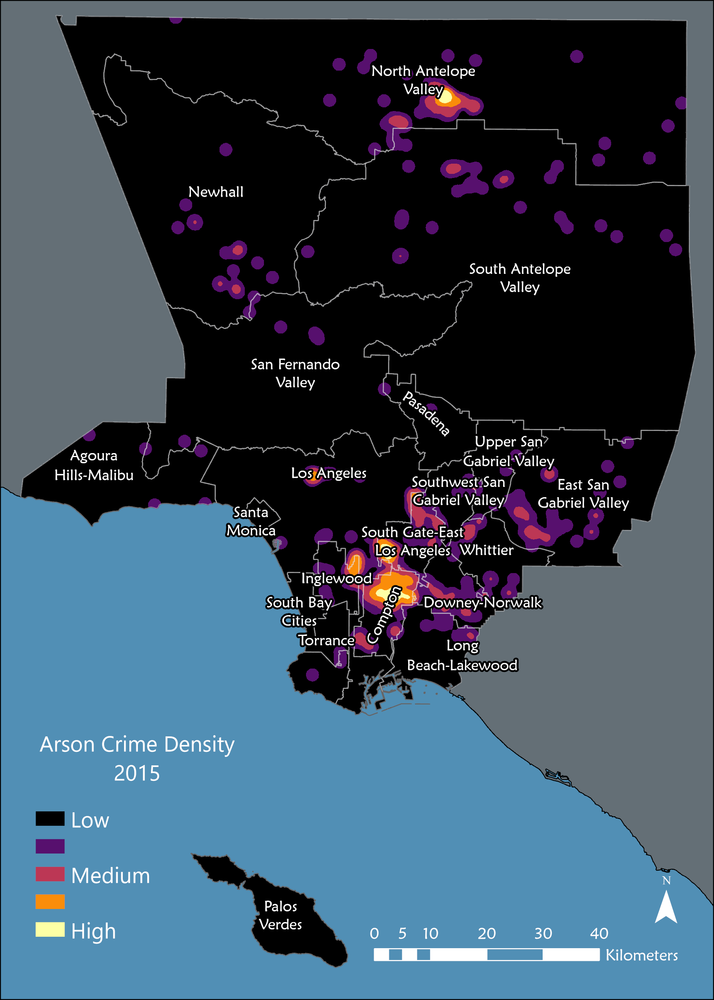

Measuring Arson Activity In Los Angeles County, CA between 2005 and 2015 using Density Surface Modeling
Adam Day | November, 2024ABSTRACT
Using Los Angele County Sheriff’s Department Arson data from 2005 to 2015, a Density Surface Model (DSM) was created to track arson activity within the district boundaries. ArcGIS Pro was the GIS used for this analysis which utilized the Kernel Method for the DSM to provide a more nuanced visualization to the arson data in this time period. Based on the model, arson activity between 2005 and 2015 fell by approximately 62% with a majority of arson cases classified as “Motor Vehicle (Autos, Trucks, Buses, M/C Etc.) for both years. Both the Compton area in the south and the Northern Antelope are in the north remain two hotspots for arson activity in both 2005 and 2015. To best serve the community in addressing future arson cases, primary resources should be allocated to both the northern and southern regions of the county, ideally in proximity to the two notable hotspots.
INTRODUCTION
The purpose of this report is to assist the Los Angeles County Sheriff’s Department in their ongoing efforts to establish safer communities within their district boundaries. The County Sheriff’s Department has requested a geospatial analysis be performed to analyze patterns of acts of arson committed in 2005 and 2015. The goal of this study is to better inform the Sheriff’s Department and administration on how to best allocated resources to meet these threats.
Using ArcGIS Pro, coupled with Los Angeles County provided crime data, this study created a density surface model (DSM) to establish potential patterns of criminal activity in the years 2005 and 2015. This data informed the study by mapping criminal occurrences in terms of their density over the area of study allowing for better visualization of how these activities spread out geographically.
By evaluating this data with GIS, this study provides users a guide on how they can perform density surface modeling by developing a search neighborhood based on manual and spatial inspection of the data, analyze clustering patters in point data, and create a DSM using both Simple and Kernal methods.
METHODS
ArcGIS Pro was the GIS used for this analysis with the NAD 1983 UTM Zone 11N used as spatial reference system for this project. This reference system was chosen as it geographically reflects the area of study. Basemap layers for this area of study as well as criminal activity data between the years of 2005 and 2015 were provided by the Los Angeles County Sheriff’s Department.
The analysis began by importing the county provided Geodatabase into the GIS. This database contained shapefiles which included the state of California along with the Los Angele County borders with subdivision. After ensuring the spatial reference system matched between both layers and the map, 2005 crime data included in the geodatabase was imported into the GIS. A selection query was ran selecting all crimes labeled as “Arson” under the “CATEGORY” field. This dataset was exported to its own feature layer and added to the map. Graphical markers were drawn around visible ‘hotspots,’ or areas where a large density of recorded crimes were recorded, using the Ellipse tool, and were added to a graphical layer. The diameter of each drawn ellipses was measured and recorded using meters as the unit of measure. Six distinct hotspots were delineated, and an average diameter was calculated for each of the ellipses. This average was then divided by ten to establish an initial search neighborhood of 1000 meters.
The Kernel Method was employed in the DSM to measure the density around each of the data points. The Kernel Method is a useful method in that it is structured around each data point in a bell shape and provides weight to each data point which increase or diminishes the closer or further you are from the data point. This allows for a more nuanced representation of density data and visually reflects a more realistic area with smooth continuous surfaces. Using the Kernel Density tool in the GIS, the 2005 crime data was imported with a radius of 100m2, 1500m2, and 2000m2 used as the search radius. Output cell size was set to 30 to ensure a more accurate and visible representation of the data. Once each of the search radius DSM models were ran, the results were classified using the Natural Breaks classification method along with 5 classification classes to show for natural patterns within the 2005 arson data. After each of the three search radius models were ran, they were visually inspected to select for the most suitable visualization of this data. Figure 1 below shows the outcome of the DSM for the 2000m2. Using the same methods as described above, the DSM was ran three additional times with the 2015 arson crime data selecting for the 2000m2 model results. Figure 2 below shows results of the 2015 arson crime data with a 2000 m2 search radius.
RESULTS
In 2005 Los Angeles County reported 828 incidences of arson within the county limits. Of these 828 arson incidences 515 (62% of all 2005 arson cases) were labeled as “Motor Vehicle (Autos, Trucks, Buses, M/C Etc.)”. The second highest arson type was “Single Occupancy Residential” at 88 incidences (11% of all arson cases). In 2015 the total number of arson cases dropped from 828 to 439, or a 47% decrease in within the 10-year period. The highest recorded arson type in 2015 remained “Motor Vehicles (Autos, Trucks, Buses, M/C Etc.)” at 195 cases (44% of all arson cases) and “All Others” constituting the second highest in case volume with 103 cases (44% of all arson cases). Figure 1 and Figure 2 below show the spatial density of these arson cases for 2005 and 2015, respectively. The 2015 results when compared with the 2005 results likely suggest that despite an overall reduction in arson cases, the cases which remain have become more spread out affecting the hotspot densities. Namely, North Antelope Valley sees a reduction in hotspot size, but an increase in density. The spreading out of arson cases from 2005 to 2015 around this northern region likely impacts the hotspot density measurement for North Antelope Valley.
Figure 1: 2005 Arson Crime Density Model
Figure 2: 2015 Arson Crime Density Model
CONCLUSION
Motor vehicles arsons constitute a significant majority of all arson cases between 2005 and 2015. This is reflected in Figure 1 and Figure 2 above with a notable hotspot located in the south county around the areas of Compton, Downey-Norwalk, Inglewood, and South Gat-East LA. An additional hotspot is located in the northern reaches of the county, namely in Northern Antelope Valley, which contains the Lancaster metro area. In 2005, a larger density of arsons was identified in the southern region of the county. Some density plots are scattered throughout the eastern and northern regions of the county; however, the majority of all arsons was located in Compton and south of South Gate-East Los Angeles. By 2015 arsons cases were nearly halved which reduced the total density within these areas. However, the 2015 arson data suggests that despite a reduction in the total arson cases, incidences appear more scattered throughout the valley than previously in 2005. Namely a fragmenting of the main hotpots located in North Antelope Valley, Newhall, and South Antelope Valley. In order to best serve the community in addressing future arson cases, primary resources should be allocated to both the northern and southern regions of the county, ideally in proximity to the two notable hotspots. With two main resources ‘hubs’ in the northern and southern regions, secondary resources should be allocated to the central, eastern, and western regions of the county. With secondary resources being allocated in these regions, and their close proximity to their northern or southern regional counterparts, Los Angeles County will have an effective spread of resources to oversee the two hotspot areas while also addressing the sporadic case outside of these zones.